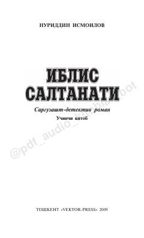

ISNuriddin Ismoilov qalamiga mansub qiziqarli sarguzasht-detektiv romanning uchinchi qismi.
Ushbu asar Nuriddin Ismoilovning mashhur sarguzasht-detektiv romanlar turkumining uchinchi qismidir. Kitobda insoniy munosabatlar, xiyonat va taqdir o'yinlari murakkab syujet chiziqlari orqali yoritib beriladi.